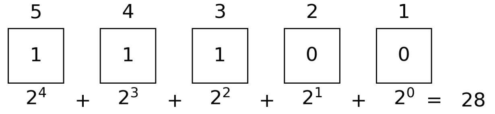
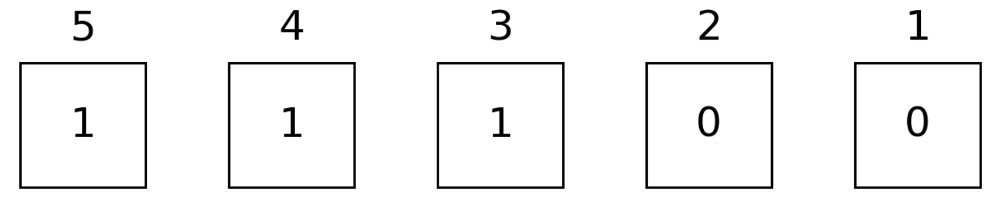
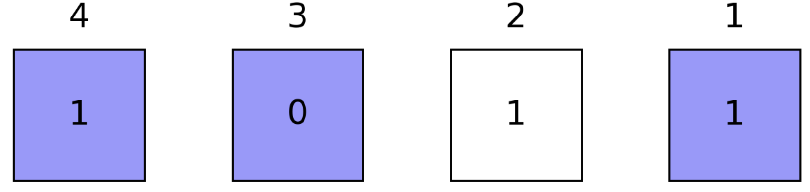
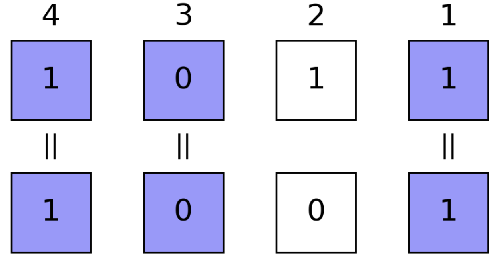
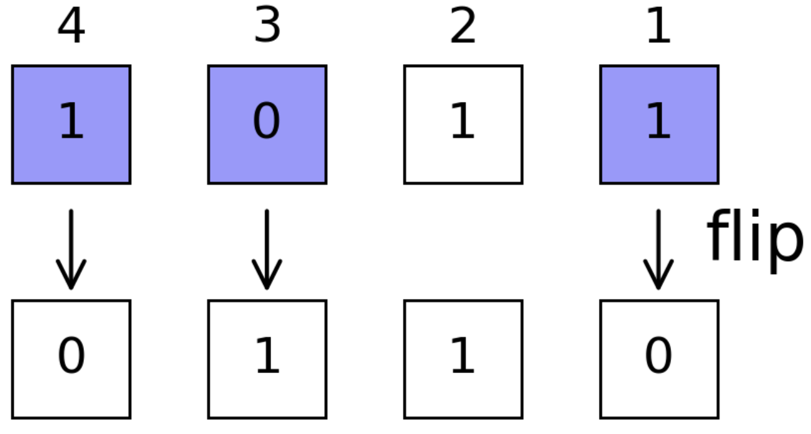
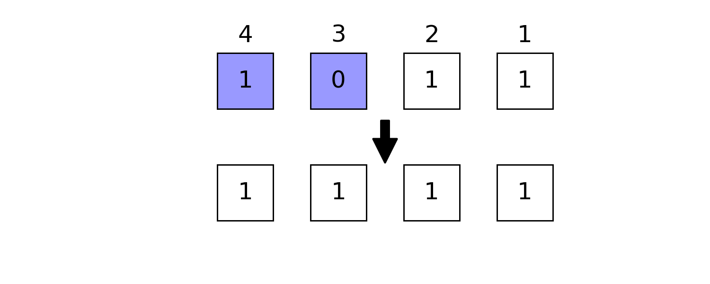
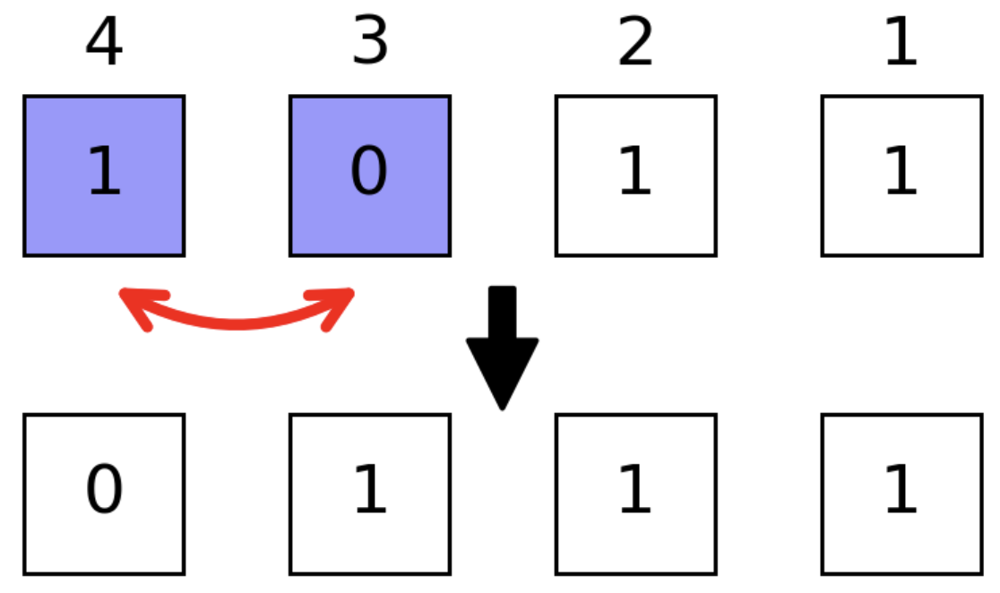
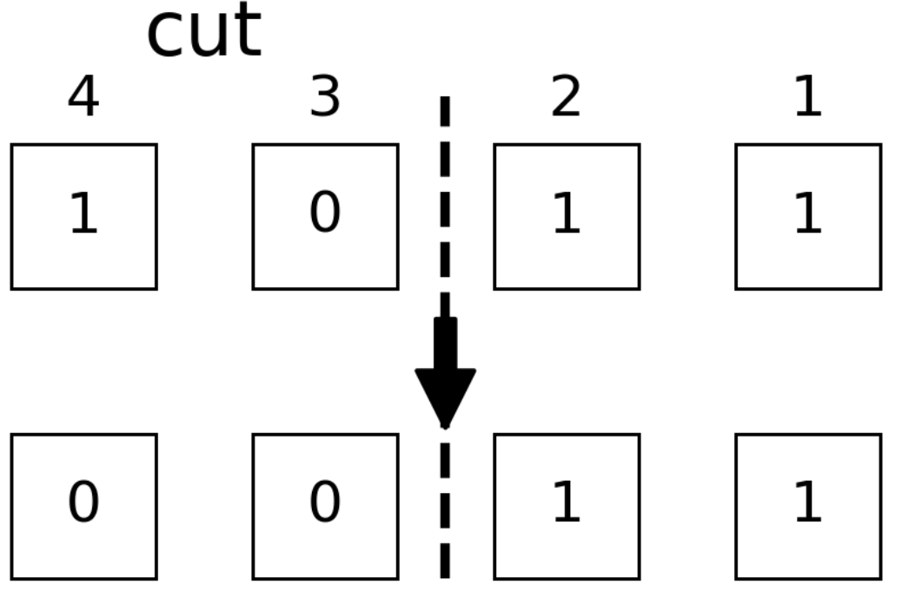
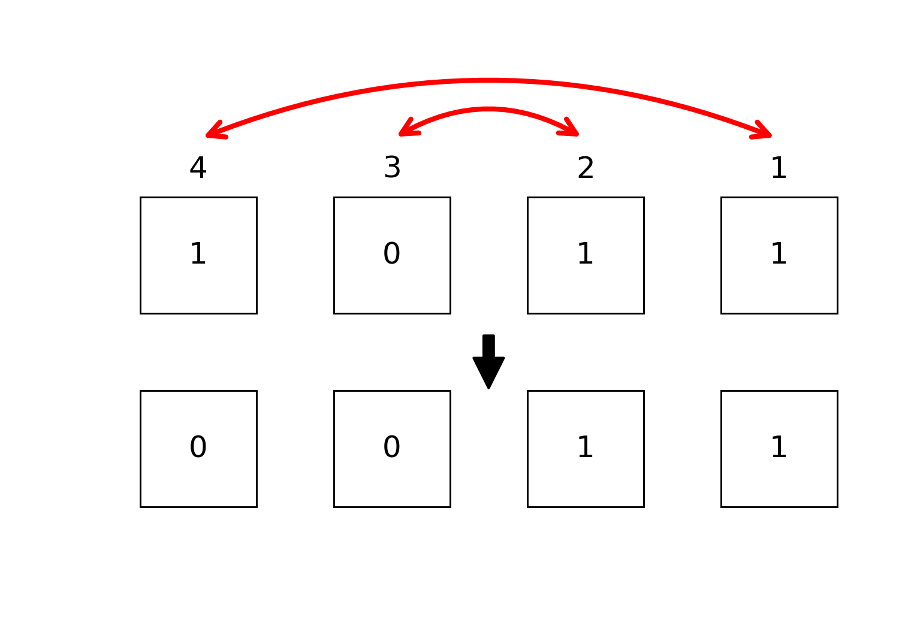
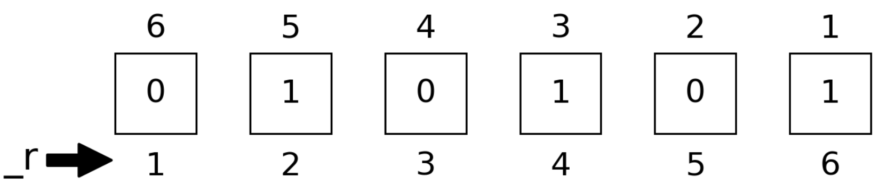

Conventions
We use $σ$ to represent a binary digit, its subtitle usually refers to the position of a given binary digit inside a number (bit string).
There are two different representation orders of a bit string.
array order
This follows the order of BitArray or other array representation of bits, e.g
For number 0b011101 (29)
literal order
This follows the order of binary literal 0bxxxx, e.g
For number 0b011101 (29)
Integer Representations
We use an Int type to store bit-wise (spin) configurations, e.g. 0b011101 (29) represents the configuration
so we annotate the configurations $\vec σ$ with integer $b$ by $b = \sum\limits_i 2^{i-1}σ_i$.  e.g. we can use a number 28 to represent bit configuration 0b11100
julia> bdistance(0b11100, 0b10101) == 2 # Hamming distance
true
julia> bit_length(0b11100) == 5
trueIn BitBasis, we also provide a more readable way to define these kind of objects, which is called the bit string literal, most of the integer operations and BitBasis functions are overloaded for the bit string literal.
We can switch between binary and digital representations with
bitarray(integers, nbits), transform integers to bistrings of typeBitArray.packabits(bitstring), transform bitstrings to integers.baddrs(integer), get the locations of nonzero qubits.
julia> bitarray(4, 5)
5-element BitArray{1}:
false
false
true
false
false
julia> bitarray([4, 5, 6], 5)
5×3 BitArray{2}:
false true false
false false true
true true true
false false false
false false false
julia> packbits([1, 1, 0])
3
julia> bitarray([4, 5, 6], 5) |> packbits;A curried version of the above function is also provided. See also bitarray.
Bit String Literal
bit strings are literals for bits, it provides better view on binary basis. you could use @bit_str, which looks like the following
julia> bit"101" * 2
1010 (10)
julia> bcat(bit"101" for i in 1:10)
101101101101101101101101101101 (766958445)
julia> repeat(bit"101", 2)
101101 (45)
julia> bit"1101"[2]
0to define a bit string with length. bit"10101" is equivalent to 0b10101 on both performance and functionality but it store the length of given bits statically. The bit string literal offers a more readable syntax for these kind of objects.
Besides bit literal, you can convert a string or an integer to bit literal by bit, e.g
julia> bit(0b00101; len=5)
00101 (5)Or use the least number of digits required
julia> bit(0b00101)
101 (5)Bit Manipulations
readbit and baddrs

julia> readbit(0b11100, 2, 3) == 0b10 # read the 2nd and 3rd bits as `x₃x₂`
true
julia> baddrs(0b11100) == [3,4,5] # locations of one bits
truebmask
Masking technic provides faster binary operations, to generate a mask with specific position masked, e.g. we want to mask qubits 1, 3, 4
julia> mask = bmask(UInt8, 1,3,4)
0x0d
julia> bit(mask; len=4)
1101 (13)allone and anyone
with this mask (masked positions are colored light blue), we have 
julia> allone(0b1011, mask) == false # true if all masked positions are 1
true
julia> anyone(0b1011, mask) == true # true if any masked positions is 1
trueismatch

julia> ismatch(0b1011, mask, 0b1001) == true # true if masked part matches `0b1001`
trueflip

julia> bit(flip(0b1011, mask); len=4) # flip masked positions
0110 (6)setbit

julia> setbit(0b1011, 0b1100) == 0b1111 # set masked positions 1
trueswapbits

julia> swapbits(0b1011, 0b1100) == 0b0111 # swap masked positions
trueneg
julia> neg(0b1011, 2) == 0b1000
truebtruncate and breflect

julia> btruncate(0b1011, 2) == 0b0011 # only the first two qubits are retained
truebreflect

julia> breflect(4, 0b1011) == 0b1101 # reflect little end and big end
trueFor more detailed bitwise operations, see manual page BitBasis.
Number Readouts
In phase estimation and HHL algorithms, one need to read out qubits as integer or float point numbers. A register can be read out in different ways, like
- bint, the integer itself
- bint_r, the integer with bits small-big end reflected.
- bfloat, the float point number $0.σ₁σ₂⋯σ\\_n$.
- bfloat_r, the float point number $0.σ\\_n⋯σ₂σ₁$.

julia> bint(0b010101)
0x15
julia> bint_r(0b010101, nbits=6)
0x2a
julia> bfloat(0b010101)
0.65625
julia> bfloat_r(0b010101, nbits=6);Notice the functions with _r as postfix always require nbits as an additional input parameter to help reading, which is regarded as less natural way of expressing numbers.
Iterating over Bases
Counting from 0 is very natural way of iterating quantum registers, very pity for Julia
julia> itr = basis(4)
0:15
julia> collect(itr)
16-element Array{Int64,1}:
0
1
2
3
4
5
6
7
8
9
10
11
12
13
14
15itercontrol is a complicated API, but it plays an fundamental role in high performance quantum simulation of Yao. It is used for iterating over basis in controlled way, its interface looks like
julia> for each in itercontrol(7, [1, 3, 4, 7], (1, 0, 1, 0))
println(string(each, base=2, pad=7))
end
0001001
0001011
0011001
0011011
0101001
0101011
0111001
0111011Reordering Basis
We store the wave function as $v[b+1] := \langle b|\psi\rangle$. We are able to reorder the basis as
julia> v = onehot(5, 0b11100) # the one hot vector representation of given bits
32-element Array{Float64,1}:
0.0
0.0
0.0
0.0
0.0
0.0
0.0
0.0
0.0
0.0
⋮
0.0
0.0
0.0
0.0
0.0
1.0
0.0
0.0
0.0
julia> reorder(v, (3,2,1,5,4)) ≈ onehot(5, 0b11001)
true
julia> invorder(v) ≈ onehot(5, 0b00111) # breflect for each basis
true